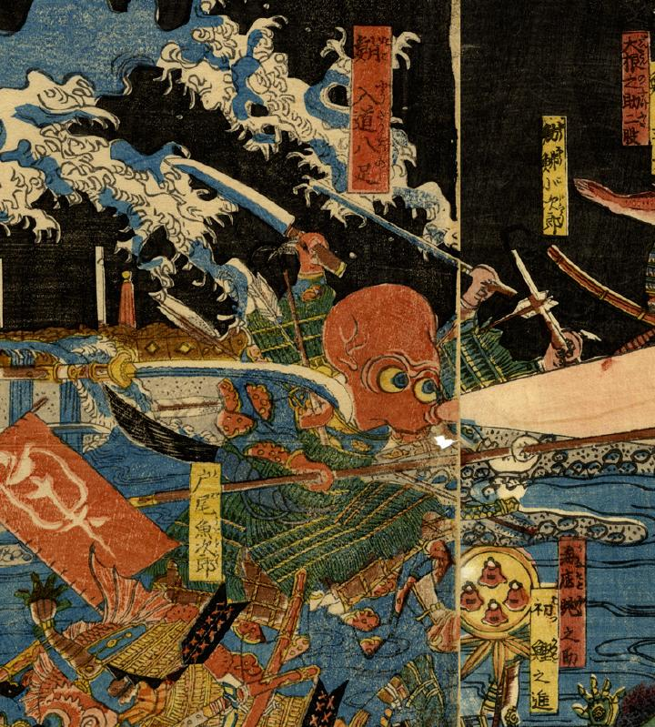

甲冑を身につけ戦う蛸。4本の足にはさまざまな武器が握られている。口からは桜色の光線のようなものを吹き出している。
出典：親書誌：U426_nichibunken_0254：青物魚軍勢大合戰之圗；アオモノサカナグンゼイダイガッセンノズ／日付：2014／資源識別子：U426_nichibunken_0254_0008_0000
Copyright (c)2010- International Research Center for Japanese Studies, Kyoto, Japan. All rights reserved.